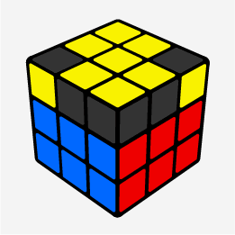
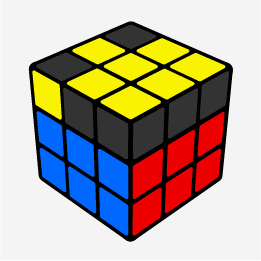
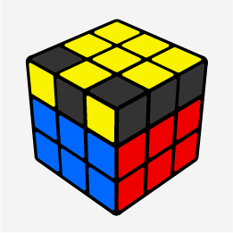
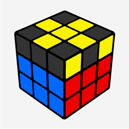
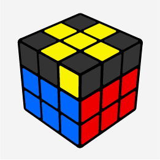
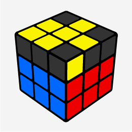
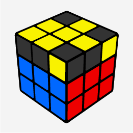

Fórmula: R U R' U R U2 R'
Apenas duas quinas amarelas faltando, na frente e na direita.

Mesma fórmula do primeiro exemplo, com duas quinas na esquerda, uma olhando pra você e outra
para a frente.

Novamente a mesma fórmula, porém agora com duas quinas na frente, olhando para você.

Segue os mesmos movimentos, agora com 4 quinas, duas olhando para a direita e duas para a
esquerda.

Muito semelhante ao exemplo anterior, porém agora com duas quinas olhando para a esquerda, uma
pra você e outra para a frente.

Caso que chamamos de "anti-sune" e que tem o formato de um peixe com a cabecinha olhando para
a esquerda, com 3 quinas erradas.

Finalmente a última situação, onde temos o caso "sune" propriamente dito, que também parece um
peixe, com 3 quinas erradas.
 Identifique qual é o seu caso e execute a fórmula até que todas as peças amarelas fiquem
orientadas no topo do cubo.
Identifique qual é o seu caso e execute a fórmula até que todas as peças amarelas fiquem
orientadas no topo do cubo.


 Repita o processo com todos as 4 quinas brancos até completar toda a primeira camada do
cubo.
Repita o processo com todos as 4 quinas brancos até completar toda a primeira camada do
cubo.

 Neste caso você precisa remover o meio errado, para isso basta aplicar uma das duas fórmulas
dos exemplos anteriores.
Neste caso você precisa remover o meio errado, para isso basta aplicar uma das duas fórmulas
dos exemplos anteriores.
 Repita o processo com todos os 4 meios até completar toda a segunda camada do cubo.
Repita o processo com todos os 4 meios até completar toda a segunda camada do cubo.

 Mesma fórmula do primeiro exemplo, porém com a "letra L" no canto superior esquerdo.
Mesma fórmula do primeiro exemplo, porém com a "letra L" no canto superior esquerdo.


 Antes de seguir para o próximo passo, certifique se todas as quinas estão nas posições
corretas. Se necessário faça o movimento U para alinhar as cores.
Antes de seguir para o próximo passo, certifique se todas as quinas estão nas posições
corretas. Se necessário faça o movimento U para alinhar as cores.